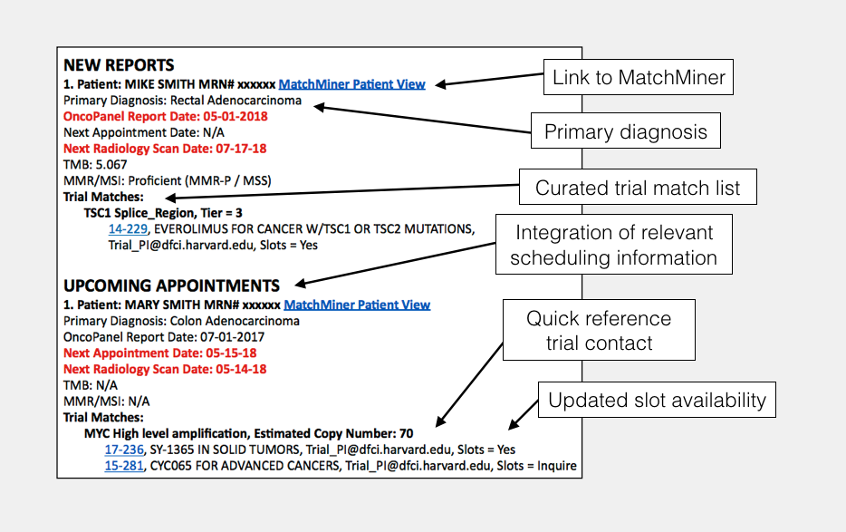

Receive concise, tailored, clinical trial match reports for your patients in your inbox.
person
Weekly Reports
Individualized, Detailed and Up-To-Date
Clincians will receive individualized reports for their profiled patients with new results and
upcoming appointments.
blur_on
Enhanced Matching
Only the most relevant trials
MatchMiner algorithmic matching will be combined with expert review and slot availability to
present only the most relevant clinical trial options.
donut_large
Active Development
Feedback and quick iteration
Participants in the Early Adopter Program will be asked to provide feedback on a regular basis
to drive further development of the MatchMiner platform.
{{ q.icon }}
{{ q.question }}

We'll contact you with additional information about the program.